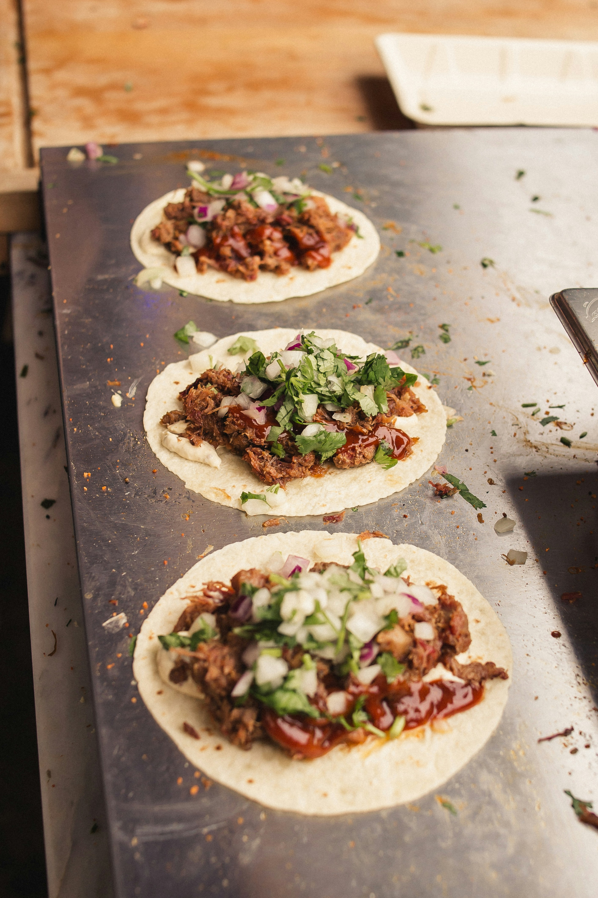

You can't go wrong with pulled pork. Especially BBQ Pulled Pork Tacos. It's simple, it's wonderful, it's delicious! Take this crowd pleaser to the cookout! Take it in to the office to give to your coworkers! Eat it by yourself out on the patio! You can't go wrong with this scrumptious meal!
Stem and tear cilantro into it's own cup. Put a large pan on the stove over medium-high heat, add 2 teaspoons of oil. Peel and dice onion and add it to hot pan. Stir occasionally until onions are soft, 3-5 minutes.
Drain and seperate pulled pork if need. Chop into thinner slices if you prefer, or keep pieces thicker if you like that better. Add prok to hot pan with onions. Stir until heated through, 2-3 minutes.
Add bbq sauce and 2 Tablespoons of water. Stir to coat pork and bring it to a simmer. Once simmering, remove from burner.
Add your slaw mix to its own bowl if it's not in one already. Add buttermilk ranch dressing and a pinch of salt and pepper, stir until combined.
Take your tortillas and wrap them in a damp paper towel and microwave until warm, 30-60 seconds. Lay out your tortillas, top with your bbq pulled pork mixture, slaw mix, and garnish with cilantro. It's ready to eat!